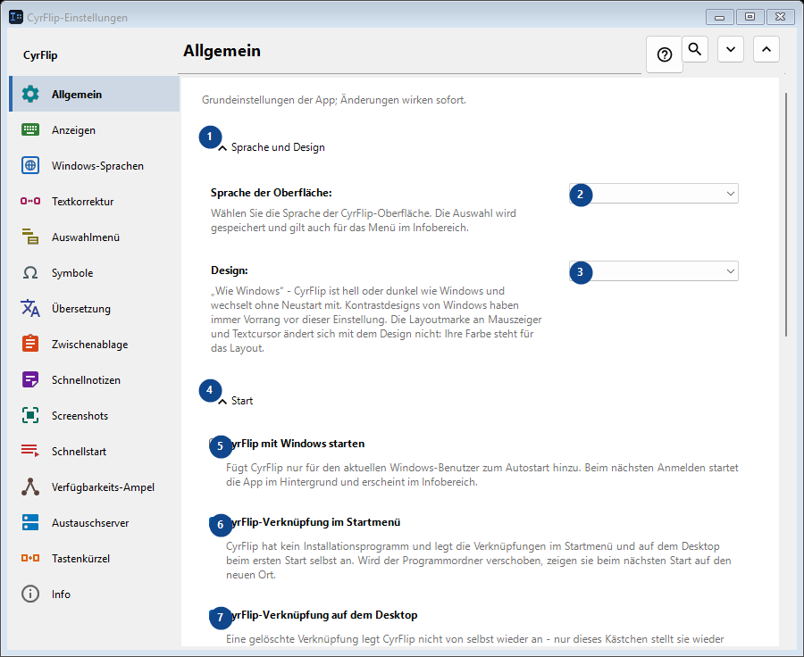
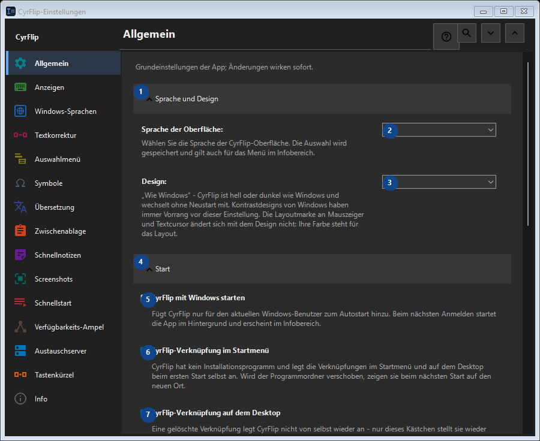

Allgemein
Zweck
Grundeinstellungen der App; Änderungen wirken sofort.


Reihenfolge
Einstellungen gelten sofort. Eine feste Reihenfolge ist nicht nötig; nutzen Sie die Gruppen unten.
Elemente
1. Sprache und Design
Nutzen Sie diesen Befehl für die genannte Aktion. Lesen Sie eine Bestätigung, bevor Sie zustimmen.
Ihre Tastenkürzel2. Sprache der Oberfläche
Wählen Sie den Wert zur benachbarten Beschriftung oder geben Sie ihn ein. Prüfen Sie ihn vor dem Fortfahren.
Ihre Tastenkürzel3. Design
Wählen Sie den Wert zur benachbarten Beschriftung oder geben Sie ihn ein. Prüfen Sie ihn vor dem Fortfahren.
Ihre Tastenkürzel4. Start
Nutzen Sie diesen Befehl für die genannte Aktion. Lesen Sie eine Bestätigung, bevor Sie zustimmen.
Ihre Tastenkürzel5. CyrFlip mit Windows starten
Fügt CyrFlip nur für den aktuellen Windows-Benutzer zum Autostart hinzu. Beim nächsten Anmelden startet die App im Hintergrund und erscheint im Infobereich.
Ihre Tastenkürzel6. CyrFlip-Verknüpfung im Startmenü
CyrFlip hat kein Installationsprogramm und legt die Verknüpfungen im Startmenü und auf dem Desktop beim ersten Start selbst an. Wird der Programmordner verschoben, zeigen sie beim nächsten Start auf den neuen Ort.
Ihre Tastenkürzel7. CyrFlip-Verknüpfung auf dem Desktop
Eine gelöschte Verknüpfung legt CyrFlip nicht von selbst wieder an - nur dieses Kästchen stellt sie wieder her.
Ihre Tastenkürzel8. Energie und Bildschirm
Nutzen Sie diesen Befehl für die genannte Aktion. Lesen Sie eine Bestätigung, bevor Sie zustimmen.
Ihre Tastenkürzel9. Computer wach halten
Solange aktiv, wechselt Windows im Leerlauf nicht in den Energiespar- oder Ruhezustand — praktisch bei langen Downloads, Kopiervorgängen oder Renderings. Der Zustand wird gespeichert: ein eingeschaltet vergessener Schalter hält den Computer auch nach einem Neustart wach - CyrFlip überwacht Ihren Akku nicht für Sie.
Ihre Tastenkürzel10. Bildschirm anlassen (wie bei Video)
Der Bildschirm wird bei Inaktivität weder ausgeschaltet noch gesperrt, genau wie beim Ansehen eines Videos. Eine Kennwortsperre (Win+L oder eine Sicherheitsrichtlinie) wird dadurch nicht aufgehoben. Der Zustand wird gespeichert: ein eingeschaltet vergessener Schalter hält den Bildschirm auch nach einem Neustart an.
Ihre Tastenkürzel11. Einstellungen übertragen
Nutzen Sie diesen Befehl für die genannte Aktion. Lesen Sie eine Bestätigung, bevor Sie zustimmen.
Ihre Tastenkürzel12. Einstellungen exportieren...
Nutzen Sie diesen Befehl für die genannte Aktion. Lesen Sie eine Bestätigung, bevor Sie zustimmen.
Ihre Tastenkürzel13. Einstellungen importieren...
Nutzen Sie diesen Befehl für die genannte Aktion. Lesen Sie eine Bestätigung, bevor Sie zustimmen.
Ihre Tastenkürzel14. Einstellungen vor dem Import wiederherstellen...
Noch nichts wiederherzustellen: CyrFlip sichert den Ausgangszustand unmittelbar vor der ersten Änderung. Dieses Element ist derzeit nicht verfügbar. Aktivieren Sie zuerst die Funktion oder wählen Sie einen Eintrag.
Ihre Tastenkürzel15. Einstellungssicherung in Dokumenten aufbewahren
Solange aktiv, legt CyrFlip eine rollierende Sicherung aller Einstellungen in Documents\CyrFlip\Backups ab - die drei neuesten bleiben erhalten. Die Sicherung überlebt eine Neuinstallation aus dem Microsoft Store: eine frische Installation findet sie und bietet die Wiederherstellung an. Die Datei nennt Ihre Rechner, Seiten und Szenarien - halten Sie sie privat.
Ihre Tastenkürzel16. Sicherungsordner öffnen
Die Sicherungen sind gewöhnliche Einstellungsdateien, benannt nach Datum. Öffnen Sie den Ordner, um eine zu kopieren oder auf einen anderen Computer zu bringen.
Ihre Tastenkürzel